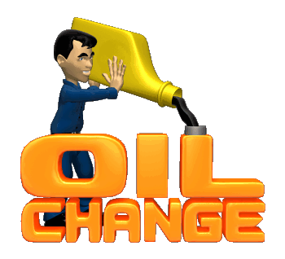

L
egend Motors
Back
Oil Change

"Car oil change service is an essential part of vehicle maintenance, and we provide it with precision and attention. We provide a professional and efficient car oil change service to ensure that your car runs in top condition. Don't let a car oil change cause you any worries, we offer a reliable and high quality car oil change service that's easy and fast. Regular car oil change maintains the health of the engine and improves its performance, and we care about providing this service to you with accuracy and attention. Our car oil change service includes attention to the smallest details, to ensure the health and safety of your vehicle. Regular car oil change service helps reduce larger maintenance costs in the future, and we aim to provide this service in the best way possible. We use the best types of oils and materials to change the car's oil, to ensure that the engine is protected and improves its performance."